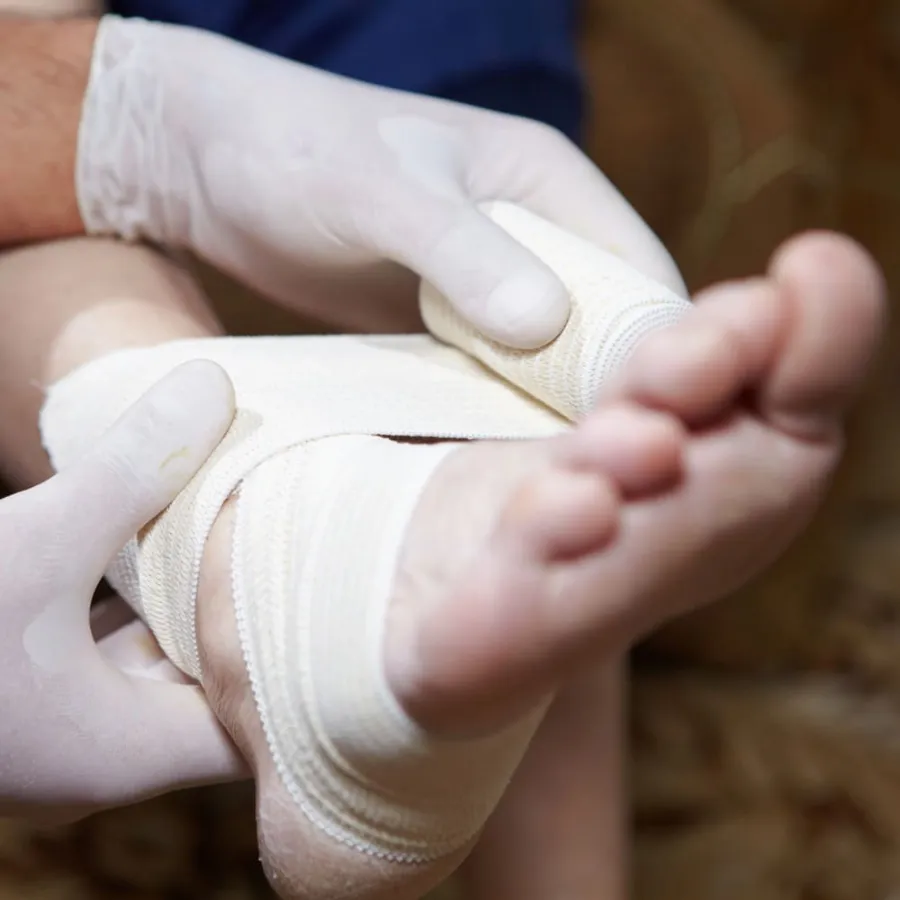
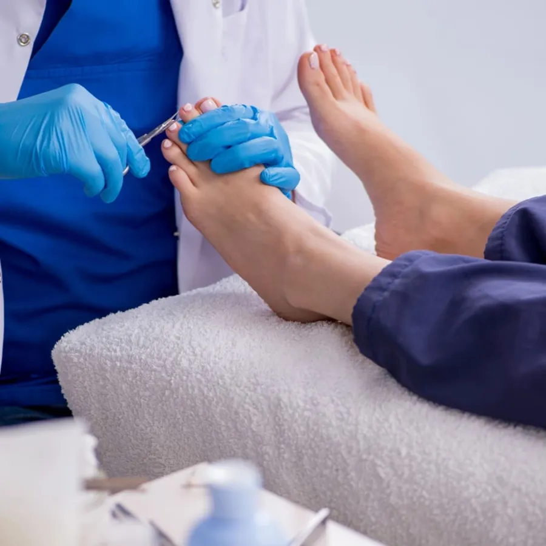

Wound & Foot Care, Wherever You Call Home
Specialized care in skilled nursing and assisted living facilities, and convenient in-home treatment for those with limited mobility.
Empowered Health's Mission
At Empowered Health Wound & Foot Care, we believe healing starts with compassion. Our mission is to care for the whole person, not just the wound or the feet, restoring comfort, health, and overall well-being. We help our patients feel empowered to return to a better quality of life, free from the interruption of painful wounds or declining foot health.

Wound Care
Advanced Care of Chronic Wounds
Chronic wounds can take a toll on your comfort and quality of life. We provide advanced, evidence-based treatments to help wounds heal efficiently and effectively, reducing the risk of infection and long-term complications.
Conservative Wound Treatment
For wounds that can be managed without surgery, we take a conservative approach: gentle, thorough cleaning, appropriate dressings, and continuous monitoring to promote healing and comfort.
Preventative Wound Management & Education
Education is key to prevention. We guide patients and caregivers in proper wound care, bandage changes, and signs of infection, so they can take an active role in keeping skin healthy.
Foot Care
Removal of Ingrown Toenails
Ingrown toenails can be painful and lead to infection if left untreated. We offer gentle removal and care instructions to help prevent recurrence and promote proper nail growth.
Nail Trimming
Regular nail care is essential for comfort and preventing nail problems. We provide safe trimming for patients who have difficulty managing their own nail care due to mobility or health concerns.
Callus Paring
Calluses can cause discomfort and pressure sores if not properly cared for. We carefully reduce calluses to restore comfort and help maintain healthy skin.

Request an Appointment or Consultation
Need a referral or consultation? Call or email us and a member of our team will reach out to schedule your visit.
Fax referrals to (865) 999-7033. Please don't include medical details by email. We'll discuss your health privately during your visit.